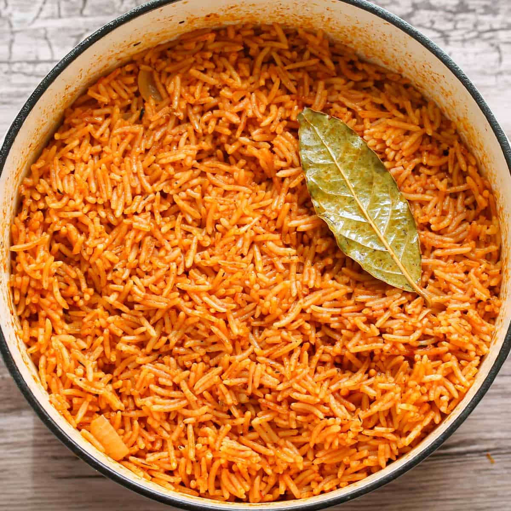
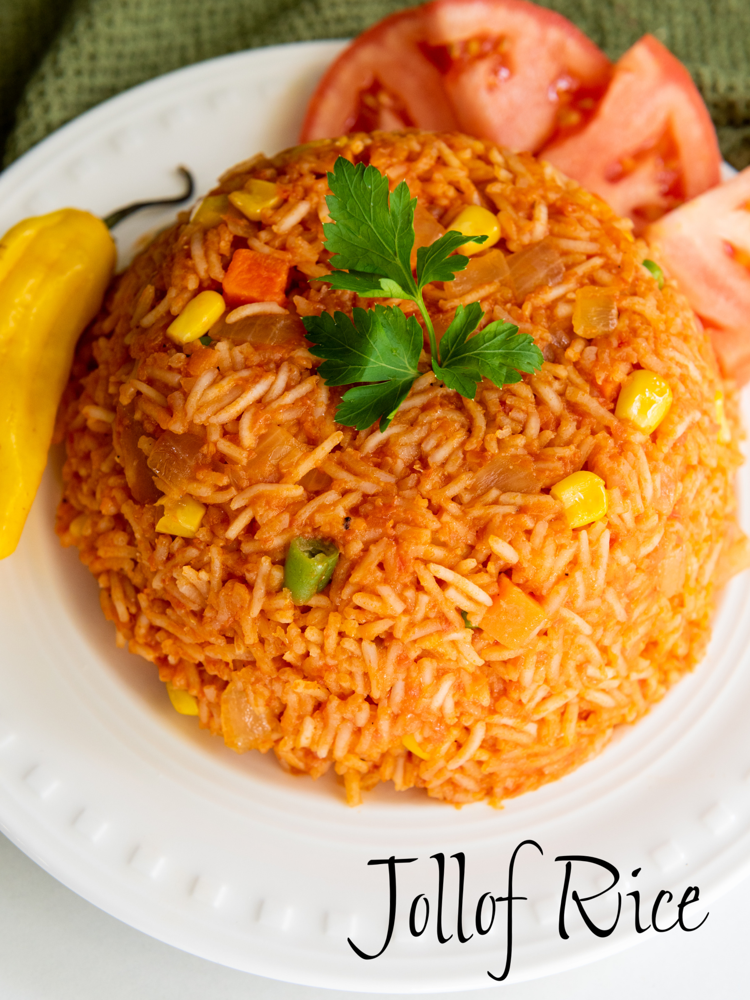

The name of my favourite meal is Jollof rice.
Jollof rice is a delicious meal cooked and enjoyed across the length and breadth of Nigeria. It is also the delight of many homes as it is prepared from rice which is one of the staple foods in Sub-Saharan Africa.
Each West African country has at least one variant form of the dish, with Ghana, Nigeria, Sierra Leone, Liberia, and Cameroon particularly competitive as to which country makes the best Jollof rice.
This is prominent between Nigeria and Ghana in a rivalry dubbed the "Jollof Wars." Further details could be obtained here.
| S/No | Ingredient | Measurement |
|---|---|---|
| 1 | Rice | 2 cups |
| 2 | Tomato paste | 400g |
| 3 | Onions | 100g |
| 4 | Vegetable oil | 50cl |
| 5 | Protein source | Desired quantity |
| 6 | Stock cubes | 2 cubes |
| 7 | Salt | 5g |
| 8 | Ginger (optional) | 5g |
| 9 | Spices | Desired quantity |
| 10 | Pepper | Desired quantity |